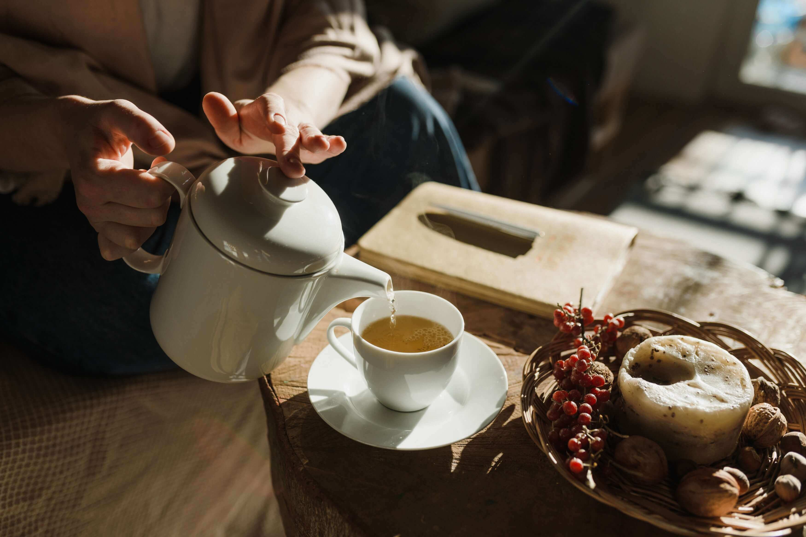
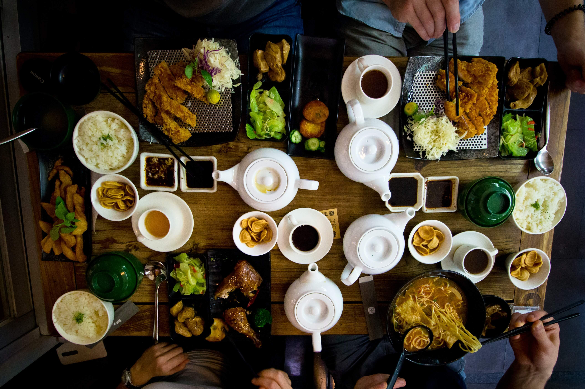
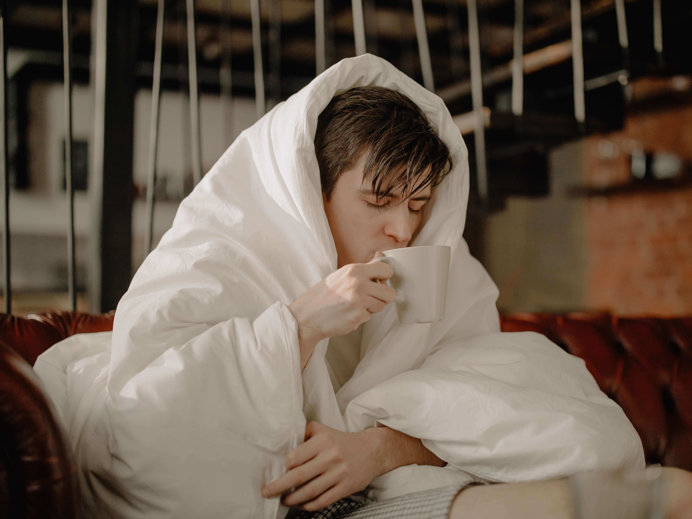

bancha.vn
Trà già bancha 3 năm
bancha.vn
Trà già bancha 3 năm
Trà Bancha là một loại trà nổi tiếng với hương vị thơm ngon và tinh túy. Để có thể thưởng thức một ly trà Bancha hoàn hảo, việc lựa chọn nguyên liệu và pha trà với tỷ lệ hợp lý là rất quan trọng. Trong bài viết này, chúng ta sẽ tìm hiểu về cách lựa chọn nguyên liệu và tỷ lệ pha Trà Bancha theo công thức Thầy Thích Tuệ Hải.
Để có một ly trà Bancha thơm ngon, chúng ta cần lựa chọn nguyên liệu chất lượng. Trà Bancha Thầy Thích Tuệ Hải thường được làm từ các loại lá trà tươi ngon, như trà xanh, trà đen, hoặc trà búp sen. Lá trà cần được thu hái trong thời gian tốt nhất, khi chúng mới mọc và chưa có quá nhiều sự biến đổi hóa học. Lá trà tươi sẽ mang lại hương vị và mùi thơm tốt nhất cho trà Bancha.
Tỉ lệ pha trà là yếu tố quyết định đến hương vị và mức độ đậm đà của trà Bancha Thầy Thích Tuệ Hải. Để có một ly trà hoàn hảo, chúng ta cần tuân thủ tỉ lệ pha chính xác. Thông thường, tỷ lệ pha trà Bancha là 2-3 gram trà cho mỗi 150ml nước. Tuy nhiên, tỷ lệ này có thể được điều chỉnh tùy thuộc vào sở thích cá nhân về độ đậm đà của trà. Nếu bạn thích trà đậm đà hơn, có thể tăng lượng trà lên 3-4 gram cho mỗi 150ml nước.
Sau khi đã chọn nguyên liệu và tỷ lệ pha, ta cần pha trà Bancha theo các bước sau:
Bước 1: Đun nước sôi, đợi nước có nhiệt độ khoảng 80-85 độ C. Lưu ý không đun nước quá sôi, vì nước quá nóng có thể làm hỏng hương vị của trà.
Bước 2: Cho lượng trà đã được cân đúng tỷ lệ vào ấm trà hoặc tách trà.
Bước 3: Đổ nước nóng vào ấm trà hoặc tách trà, đậy nắp lại và chờ từ 1-2 phút để trà thấm đều và hòa quyện với nước.
Bước 4: Lắc nhẹ ấm trà hoặc tách trà để tách trà rơi xuống đáy và lọc bỏ phần bã trà.
Bước 5: Đổ từ từ trà từ ấm trà hoặc tách trà ra các ly trà đã được chuẩn bị trước đó.
Chúng ta có thể thêm một chút đường hoặc mật ong vào trà để làm dịu hương vị đắng của trà.
Để đảm bảo trà có hương vị tốt nhất, nên sử dụng nước khoáng hoặc nước đã lọc thay vì nước vôi hoặc nước có chất lượng không tốt.
Để bảo quản trà lâu dài, nên đặt nó trong hũ đậy kín và để nơi khô ráo, thoáng mát.
Đánh giá về chất lượng và giá trị dinh dưỡng của Trà Bancha Thầy Thích Tuệ Hải:
Pha Trà Bancha theo công thức Thầy Thích Tuệ Hải không chỉ có hương vị thơm ngon mà còn có nhiều lợi ích cho sức khỏe. Trà Bancha có chứa nhiều chất chống oxy hóa và chất chống vi khuẩn tự nhiên, giúp cải thiện hệ miễn dịch và ngăn ngừa các bệnh tật. Ngoài ra, trà Bancha còn giúp giảm căng thẳng, tăng cường sự tập trung và giảm nguy cơ mắc bệnh tim mạch.
Thưởng thức một tách trà Bancha, được pha chế theo công thức tinh tế và tinh túy của Thầy Thích Tuệ Hải, đòi hỏi sự lựa chọn kỹ càng từ những nguyên liệu thượng hạng và tuân thủ tỷ lệ pha chính xác. Bằng cách nắm bắt nghệ thuật pha trà và làm theo lời khuyên của chuyên gia, người ta có thể đảm bảo hương vị hoàn hảo của trà Bancha. Chúng tôi khuyến khích bạn thực hiện những gợi ý nói trên và thưởng thức một tách trà Bancha thú vị.
Thực dưỡng đã trở thành một phương pháp sống lành mạnh và cân bằng ngày nay, và trà BanCha là một phần quan trọng của phong cách sống thực dưỡng. Nội dung tiếp theo, chúng ta sẽ tìm hiểu về thực dưỡng với trà BanCha cùng Thầy Thích Tuệ Hải và những lợi ích sức khỏe mà nó mang lại.
Trà BanCha là một loại trà được trồng và chế biến theo phương pháp truyền thống ở Nhật Bản. BanCha có nguồn gốc từ cây chè trà Camellia sinensis, tuy nhiên, nó khác biệt với các loại trà khác như SenCha hay Matcha. BanCha được thu hoạch từ lá chè già, có hương vị độc đáo và dinh dưỡng phong phú.
Trà BanCha được coi là một phần quan trọng trong thực dưỡng với nhiều lợi ích sức khỏe. Thầy Thích Tuệ Hải, một giảng viên và nhà nghiên cứu về thực dưỡng, khuyến khích việc sử dụng trà BanCha như một phần quan trọng trong chế độ ăn uống hàng ngày.
Tốt cho tim mạch: Trà BanCha có chứa các chất chống oxy hóa, giúp giảm nguy cơ mắc các bệnh tim mạch và huyết áp cao.
Tăng cường hệ miễn dịch: Trà BanCha chứa các chất chống vi khuẩn tự nhiên, giúp tăng cường hệ miễn dịch và ngăn ngừa bệnh tật.
Giảm căng thẳng và tăng cường tập trung: Trà BanCha có chứa các chất chống căng thẳng và tăng cường tập trung, giúp giảm căng thẳng và cải thiện tinh thần.
Tốt cho tiêu hóa: Trà BanCha có khả năng hỗ trợ tiêu hóa, giảm các vấn đề về tiêu hóa như đầy hơi, buồn nôn và tiêu chảy.
Chống oxi hóa: Trà BanCha chứa các chất chống oxi hóa mạnh, giúp ngăn chặn tác động của các gốc tự do trong cơ thể và giữ gìn sự trẻ trung.
Tránh sử dụng quá nhiều: Mặc dù trà BanCha có nhiều lợi ích sức khỏe, nhưng cũng cần sử dụng một cách hợp lý. Hãy uống trà BanCha một cách điều độ để tránh tác động tiêu cực đến sức khỏe.
Kiểm tra sự tương thích: Nếu bạn có bất kỳ vấn đề sức khỏe nào, hãy tham khảo ý kiến của bác sĩ hoặc chuyên gia dinh dưỡng trước khi sử dụng trà BanCha.
Trà BanCha cùng Thầy Thích Tuệ Hải mang lại những lợi ích sức khỏe đáng kể và là một phần quan trọng của thực dưỡng. Hãy áp dụng trà BanCha vào chế độ ăn uống hàng ngày của bạn để tận hưởng những lợi ích tuyệt vời mà nó mang lại. Tuy nhiên, hãy nhớ sử dụng trà BanCha một cách hợp lý và điều độ để đảm bảo sức khỏe tốt nhất.
Trà Bình Minh và bài thuốc cảm là những phương pháp dưỡng sinh hữu ích để giúp chống cảm lạnh và tăng cường sức đề kháng. Trà Bình Minh cũng cung cấp một loạt các món ăn phong phú cho dưỡng sinh hàng ngày. Trong sổ tay dưỡng sinh, có hướng dẫn cách pha chế trà và bài thuốc cảm.
Để pha trà, chúng ta sử dụng túi lọc trà và nước nóng. Trong khi nước sôi, chúng ta có thể trộn bột sắn dây với nước lạnh để tạo thành hỗn hợp sánh. Sau đó, kết hợp nước trà bancha sôi và hỗn hợp sánh để tạo ra nước trà sánh. Nếu muốn uống trà Bình Minh, chúng ta có thể thêm nước tương tamari và nước cốt gừng.
Đối với bài thuốc cảm, chúng ta nên uống nó nóng và sau đó trùm mền để cân bằng cơ thể. Ngoài ra, có thể hít thở sâu để thư giãn và giảm triệu chứng. Bài thuốc cảm này cũng giúp giải quyết các triệu chứng ho và tiêu chảy.
Bài thuốc cảm và trà Bình Minh không chỉ giúp chống cảm lạnh mà còn giúp tăng cường hệ miễn dịch. Nếu đã bị cảm, nên uống bài thuốc cảm này trong hai ngày liên tiếp và tránh ăn uống bất kỳ thức ăn khác.